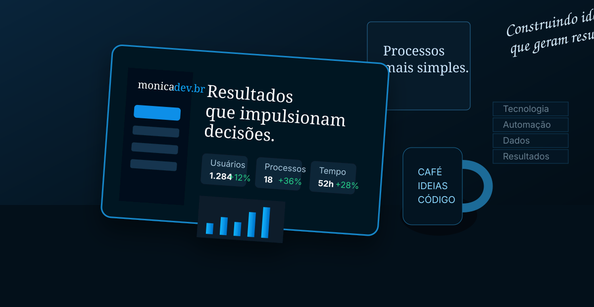
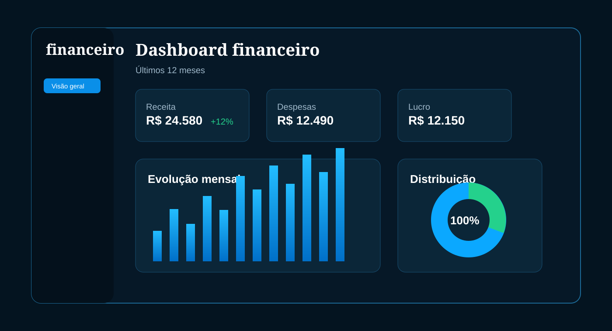
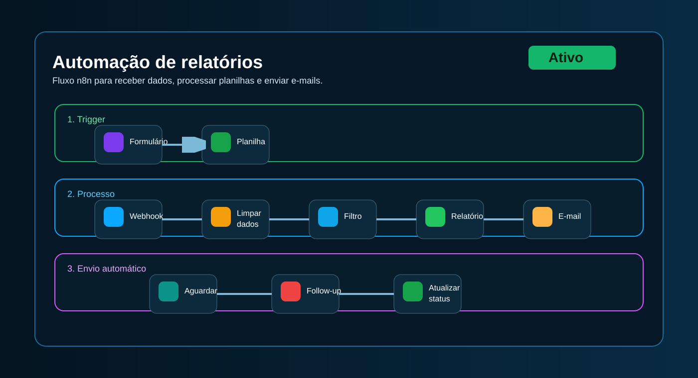

Desenvolvimento Web
Sites institucionais, landing pages e interfaces personalizadas, com foco em performance, clareza e experiência do usuário.
Transformo ideias em soluções digitais. Crio interfaces web, automações e dashboards para organizar informações, reduzir trabalho manual e gerar resultados reais para o seu negócio.

Construindo ideias que geram resultados.
Soluções práticas em desenvolvimento web, automação e análise de dados, adaptadas à sua necessidade.
Sites institucionais, landing pages e interfaces personalizadas, com foco em performance, clareza e experiência do usuário.
Fluxos com n8n, integrações, formulários, planilhas e rotinas automatizadas para reduzir tarefas manuais.
Relatórios, indicadores e painéis interativos em Power BI, Excel e SQL para acompanhar resultados e apoiar decisões.
Conexão entre ferramentas, consumo e criação de APIs sob medida para tornar operações mais fluidas.
Exemplos de soluções que representam minha forma de trabalhar.
 Web
WebSite institucional para cafeteria, com cardápio online, design moderno e foco na experiência do cliente.
Ver projeto →
DadosDashboard financeiro com controle de receitas, despesas e indicadores em tempo real.
Ver projeto →
AutomaçãoFluxo no n8n para processar dados, gerar relatórios e enviar por e-mail automaticamente.
Ver projeto →Se você precisa de um site, automação ou dashboard, posso ajudar a transformar sua ideia em uma solução prática e alinhada à sua necessidade.